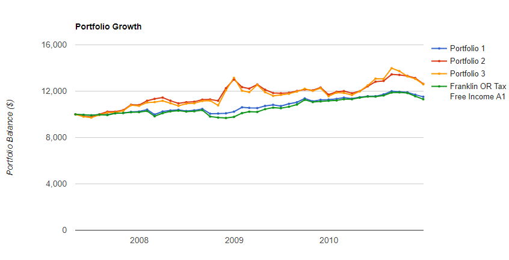

Memory whitewashes mistakes, too. Mark Armbruster of Armbruster Capital Management in Pittsford, N.Y., says one client insisted on putting 40% of a $5 million portfolio into a single hedge fund. Alarmed by the fund's risk, Mr. Armbruster badgered the client into selling. Shortly thereafter, the fund collapsed. The client narrowly missed losing $2 million.
In a subsequent conversation, Mr. Armbruster says, the investor had no recollection of what had happened. “The whole episode had been blotted out from memory,” Mr. Armbruster says.
Because memory is so malleable, Joachim Klement, chief investment officer at Wellershoff & Partners, a consulting firm in Zurich, urges his clients to keep an investment diary, creating a record of their buying and selling decisions and the reasons behind them. “You can mitigate the flaws of memory by writing events down as they happen,” he says.
You shouldn't trust your recollections of how you felt in 2008 and 2009. Instead, ask your spouse or a close friend how afraid you were, and look at your old account statements to see whether you sold at the bottom. The best guide to how you will act in the next market downturn is how you did act in the last one.
| Date | AA Decision | Justification | Learning |
|---|---|---|---|
| July 2019 | 50/50 | Greater Fool had some worrying posts, inverted yield curve, seemed imminently downward | Keep a weekly email on S&P 500 value? Didn't have a exit point if I made the wrong decision and missed a big rally |
| January 2020 | 95/5 | Missed a rally, Greater Fool says 2020 won't be super big, but a positive one. Plan on rebalancing at opportune times | |
| March 2020 | 95/5 | Lots of losses due to Coronavirus. Poor timing, but nobody saw this coming either! Rebalanced treasuries in 401k to stocks Quoting funds that sold off early because they are volatility funds is quite cherry picking, WSJ | Would recommend diversifying into “good” brands that are selling off because of index fund liquidation? |
| August 2020 | 100? | Don't really want treasuries since fed rate is near zero. | |
| Nov 2020 | ~100, but s'more dividends stocks/banks? | https://www.greaterfool.ca/2020/11/07/whats-up-with-divvy-stocks/ But why isn't everyone else thinking the same way? |
Need to keep new stocks in tax shielded accounts and bonds in taxable accounts
Root question started with “When should I sell my RSUs?”. Should I wait until before or after the dividend? Basically same question of “is a dividend capture strategy profitable?” (buy a stock a few days before ex-dividend date and then selling afterwards).
dividend capture strategy backtest has some ok articles. Quantopian seems to have a nice backtest, not sure what it looks like going forward though. https://www.quantopian.com/posts/a-carry-strategy-with-portfolio-optimization
Probably a good case of TAANSTAFL. Just diversify and forget about it.
While you might be able to time the highs, you still have to time the lows. When do you get back in? It takes a while to go down, and has many false starts along the way.
Really nicely explained video: YouTube Link! https://www.youtube.com/watch?v=ATCqq2Mh2GQ
| Recession | Treasury maturities returns |
|---|---|
| 74-76 | No difference |
| 80-83 | No difference |
| 90-92 | No difference |
| 00-02 | No difference |
| 08-10 | Some difference. Longer terms had nice price appreciation “pop”.  |
* Only in 2008 did long term treasuries pop. So…maybe go with tax-exempt municipal? But hard to sell. Treasury interest is state tax exempt.
TOp 10 leading indicators: https://en.wikipedia.org/wiki/Economic_indicator
Pretty good writeup by Bridgewater too: bwam021218.pdf
https://earlyretirementnow.com/2018/02/21/market-timing-and-risk-management-part-1-macroeconomics/
Accounts to manage:
When interest rates for short-term bonds increase (which the fed generally does after a long boom time to corral inflation), then the price for existing bonds will need to be discounted to be equivalent to the new bonds with higher interest rates, so overall returns for bonds go down. At some point near the top of the business cycle, bond investors feel the need to lock in long term rates because a recession is coming and the Fed always? lowers interest rates to cushion the drop. So the demand for long-term bonds increases, necessitating a higher price for them and decreasing their effective yield, while short-term bonds are undesired and their price lowers and increases their effective yield. This is called an Yield_curve#Inverted_yield_curve and has happened consistently for the past 40-50 years, somehow 6-12 months before the stock market declines.
Ramit Sethi: https://www.iwillteachyoutoberich.com/blog/inverted-yield-curve/
This occurs when the curve inverts or goes the other way. It shows that younger bonds (i.e. bonds that are two years or less) yield more in interest than older ones. This shows the lack of investor confidence in older bonds and is a good indicator that a recession is incoming (more on that soon).
As more and more people begin to buy long-term bonds, however, the Federal Reserve responds by lowering the yield rates for those securities. And since people aren’t buying a lot of short-term U.S. Treasury bonds, the Fed will make those yields higher to attract investors.
Not sure what bond maturities I should get. Well, maybe I shouldn't as I'm timing the market too.
Nice chart! http://schrts.co/aapFLd
It was inverted a full two years before 2008 hit. So maybe everyone knew it was going down, but no one knew when so they couldn't bet on it?
{kind=link}
{kind=link}